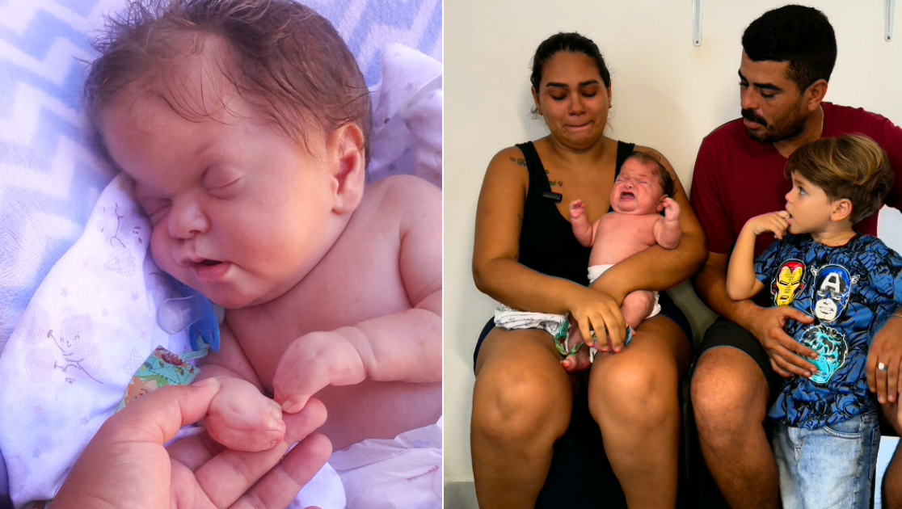

🆘 Esthevão precisa da sua ajuda para sobreviver!
💔 O choro do Esthevão não é manha. É dor! Dor de quem nasceu há apenas um mês e meio e já carrega o peso de uma condição rara e extremamente dolorosa.
🧠 Estevão nasceu em Natal (RN), com uma síndrome rara chamada Síndrome de Apert, que provoca a fusão dos ossos do crânio, mãos e pés, deformando o rostinho e comprimindo o cérebro.
"Ele chora de dor... e nós choramos por não poder fazer nada", diz a mãe, Ana.
Para sobreviver e ter qualidade de vida, Esthevão precisa urgentemente de uma cirurgia de correção craniana, que será feita em Campinas (SP). O prazo é curto: o procedimento precisa acontecer até no máximo os 3 meses de vida.
🚫 Se não fizer, as consequências serão irreversíveis: ele pode perder os sentidos, não andar, não falar, não brincar.
💔 Além disso, o pequeno ainda nasceu com os dedinhos todos grudados e um furo no coração, que também exigirá cirurgia no futuro.
🏥 O SUS não consegue atender a tempo. E o custo do procedimento é alto. A meta da vaquinha é para custear a cirurgia, exames, além de passagem, alimentação e hospedagem dos pais, que terão que ficar pelo menos 30 dias em São Paulo, longe dos dois outros filhos, de 4 e 9 anos, que ficarão com a avó.
❤️ Sua doação pode salvar o Esthevão:
- ✅ Custear a cirurgia de correção craniana urgente
- ✅ Pagar exames necessários
- ✅ Garantir passagem, alimentação e hospedagem dos pais
- ✅ Dar uma chance de vida digna para o bebê
🙏 Neste momento, toda ajuda é urgente e essencial. Estevão precisa da cirurgia para ter chance de crescer com dignidade, sem dor e com saúde. 💛